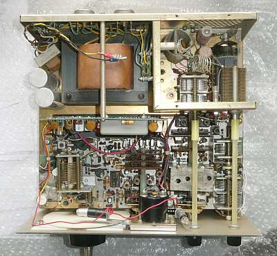 |
シャーシ上面です
終段部のシールドケースは取り外して写しています |
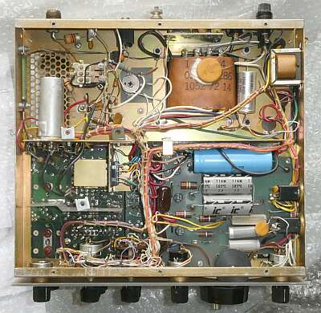 |
シャーシ裏面です
左上のファイナル部の下に、ドライバーがレイアウトされています |
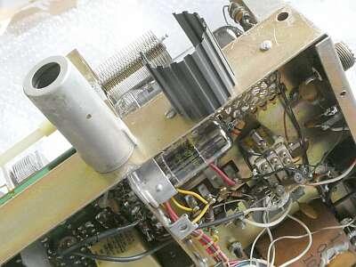 |
珍しい？レイアウトのドライバ １２ＢＹ７Ａです
放熱フィンを巻いたうえでシールドがかぶせてあります
|
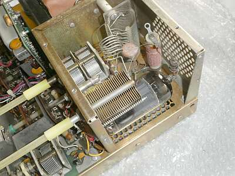 |
ファイナル部
６ＫＤ６ シングル 横向きです
プレート給電のパラ止めがいわば、上から終段管を支えています！
冷却ファンはオプション設定です |
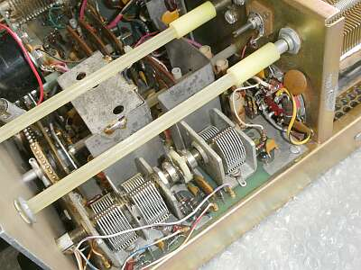 |
右ソケットは、６ＫＤ６
手前のＶＣは、ＲＦ同調、ドライブ調整
２連＋シングル
シングル側は、送信ドライバプレート同調用
ステーター側は、ちゃんとアースから浮かせてあります
終段の中和バランスが狂う原因にならないよう、きちんと対応されています |
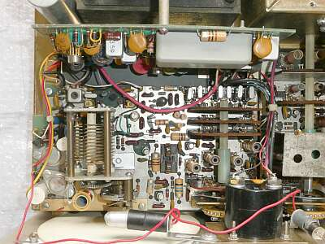 |
ローコスト化 ＆ 小型化
フィルタの乗っているジェネレータ部、VFO/Pri-Mix/Audｉo部、Pre-Selector部と３枚の基板で構成されています（都合、基板は３枚）
ご覧のように、ＶＦＯもその１枚の基板（VFO/Pri-Mix/Audｉo部）の中の一部です
シールドもなく、安定度には問題あり！です
ダイヤルメカも、バーニア機構併用でメインダイヤル１回転でおおよそ２５ＫＨｚとなっていますが、バックラッシュが気になります
ダイヤルスピンナー部の位置によっては、勝手に？ダイヤルが動きます（修正を試みました！） |
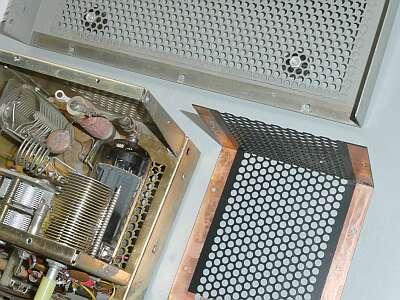 |
さすが老舗の無線機屋さんと思えるシールドへの配慮
終段カバーや、ケースのビス部はきっちり相手に接触するよう処置されています（シールド対策）
ドライバー管の放熱フィンの採用、絶縁シャフトの採用、中和への配慮、増幅型ＡＬＣの採用など、高周波屋さんのノウハウは活かされています |
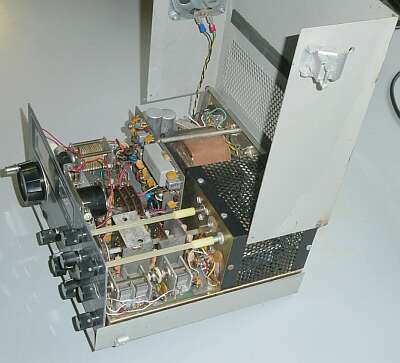 |
このように筐体が開けられるようになっているのですが、支点となる部分が壊れているというか、部品が取り付いていなかったので、有り合わせのもので応急処置しました
とりあえず機能します！ |
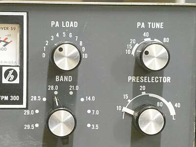 |
一般的？なバンド情報が逆・・・右から左に周波数帯が上がっていく、ちょっと面喰います |
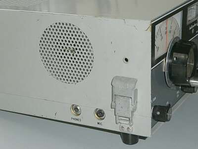 |
ここに内臓スピーカーが取り付いています
マイクロホン、ヘッドホンの接続もこの左サイドパネル
本体を、左ハンドル車助手席側のアンダーコンソールに取り付けるとすれば、こういうレイアウトになりますね
|
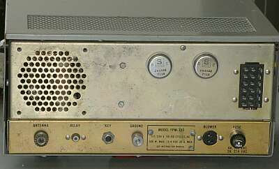 |
きわめてシンプルなリアパネル
ＤＣ－ＤＣのパワートランジスタが目につきます
右から、ヒューズホルダ、冷却ファン接続ジャック、アース端子、電鍵（キー）端子、リニアアンプ・スタンバイ端子、アンテナ接続端子 |